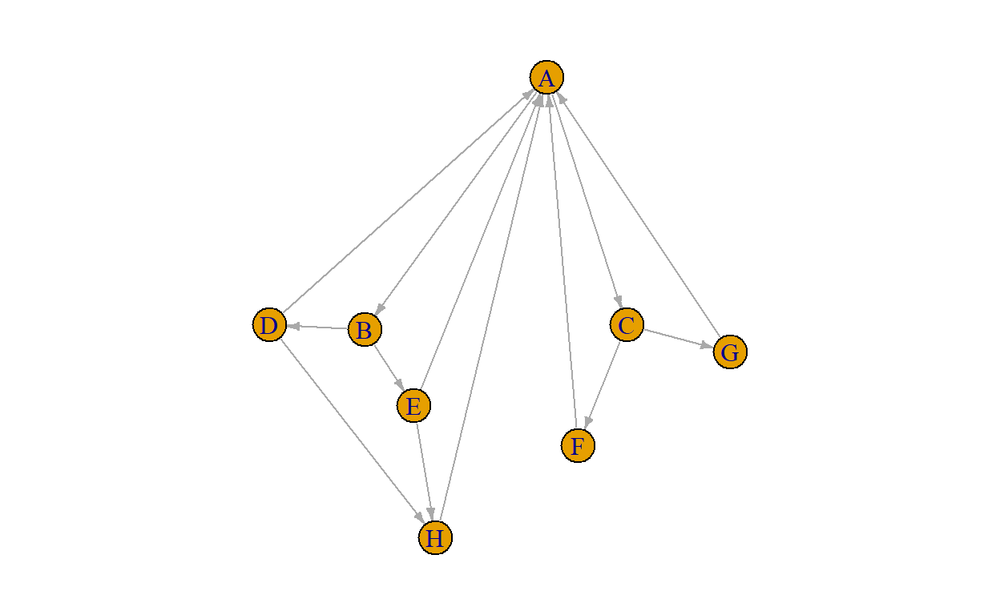

In this tutorial we are going to look at the following topics.
How to use the pipe to improve the readability of a chain of operations in R
Summary statistics of networks
We will take a special look at the internet as a network
Excited? Or at least interested? Let’s go!
The magrittr package (to be pronounced with a sophisticated french accent, like the famous TV detective Maigret, who loved smoking his pipe), has two aims: to decrease development time and to improve readability and maintainability of code.
In this course, we want to make you familiar with the pipe, because it improves readability of your code greatly, especially when you deal with a series of operations in sequence.
There is much to say about the pipe, and we will only consider its basic use. But you will find this quite useful.
The pipe is provided by the %>% operator, which pipes a value forward into an expression or function call. Those familiar with unix-like systems may be familiar with pipes.
The pipe works as follows. Rather than typing f(x), you can use the pipe and type x %>% f. So, sin(x) and x %>% sin() are equivalent.
What happens is the following. When you type x %>% sin(), R takes the first object (x in this case), and then inserts that as the very first element into the function to the right.
So: * x %>% f() is turned by R into f(x)
x %>% f(normalized = TRUE) is turned by R into f(x, normalized = TRUE)How the heck could this be useful, you might think.
If you wanted to create a star network with 11 vertices in igraph and then plot it, you could write
star <- igraph::make_star(11)
igraph::plot.igraph(star)This works, but creates an object star that ends up cluttering your work environment. You can see that by adding ls() as a third line to the previous block and run it again, which shows you the objects in your global environment. So:
star <- igraph::make_star(11)
igraph::plot.igraph(star)
ls()Indeed, star now is there, along with some other objects that are lying around in your space. That is not a problem, but you can easily lose oversight and if star were big it could end up eating up memory space you can’t use for anything else. Not good for anything.
You can solve that by adding an additional line to remove the object:
star <- igraph::make_star(11)
igraph::plot.igraph(star)
rm(star)
ls()Indeed, star is gone now. But it did take an additional line. Alternatively, you could put it in a one-liner:
igraph::plot.igraph(igraph::make_star(11))This prevents the star-object from ending up in your workspace in the first place, but it will take you a few extra seconds to see what the code means if you saw it for the first time.
A more pleasant way to code and read this is:
igraph::make_star(11) %>%
igraph::plot.igraph()This very clearly shows what you want to do and helps you understand your code better. More importantly, the code will also be clear when you revisit it in two months from now.
You read the %>% operator as “with that” or “then.” So, the previous block can be read as make a star network and with that plot it or make a star network and then plot it
That is quite readable and understandable.
There are two ways to type the %>% operator. The first way is to type it in the normal way. This involves typing 5.5 while keeping the shift key pressed. I find that annoying.
Here, it helps to to remember the keyboard shortcut that is available in RStudio: Ctrl-shift-M. I used that dozens of times every day of the week. It is still a two-handed activity, but a lot easier than typing it as raw code.
By the way, Rstudio has a lot of useful keyboard shortcuts. You find the standard ones by Alt-Shft-K, or in the menu Tools > Keyboard Shortcuts Help. Perhaps you’ll find more useful shortcuts you want to use daily.
NOTE: this is a shortcut that works inside RStudio, but it does not work inside this tutorial in the browser!
We can, of course, make the chain longer.
If you type
x %>%
f() %>%
g() %>%
h()this is equivalent to “x, then apply f() to that, then apply g(), and then apply h()”, in other words: h(g(f(x))). You can see that the former (with the pipe) is a lot easier to understand, read, and debug than the consolidated code.
You assign the result to an object like you are used to. So, if you want the chain to be assigned to the object result, you would write
result <- x %>%
f() %>%
g() %>%
h()Now, let’s see if you understand how it works.
First, generate a random undirected network of 10 vertices, where each edge has a .25 probability of existing. Use the function igraph::erdos.renyi.game.
igraph::erdos.renyi.game(10, p.or.m = .25, type = "gnp")Now, check that it works by calculating the density of the network. Generate a random network with 1000 nodes and a .25 edge probability. Then, think what density value you expect the network to have and run your code. Use the pipe!!!
print("1. first generate the network with 1000 vertices")
print("2. then calculate the network's density")igraph::erdos.renyi.game(1000, p.or.m = .25, type = "gnp") %>% igraph::edge_density()Of course, the density will be a bit different every time you run the code, as the network is random. Obviously, it will also not be exactly the value you would expect, due to its random nature.
Let’s now make the chain longer.
Below: 1. Generate a directed random network with 500 vertices and a .2 edge probability. 2. Calculate the betweenness scores of the vertices 3. draw a histogram with 20 bins and the title “histogram of my random network”
You only care about the histogram, so you do not save any intermediate objects and write the whole chain with the help of the pipe.
cat('1. Generate a directed random network with 500 vertices and a .2 edge probability.\n
2. Calculate the betweenness scores of the vertices\n
3. Draw a histogram with 20 bins and the title "histogram of my random network"')igraph::erdos.renyi.game(500, p.or.m = .2, directed = TRUE, type = "gnp") %>% igraph::betweenness() %>% hist(main = "histogram of my random network")You can see this is a lot nicer than doing this without pipes.
The pipe sofar works wonderfully, but only if you want to pipe the object to the first argument of the next function. In other words x %>% f(y = 2, z = 3) becomes f(x, y = 2, z = 3), but sometimes you want to have the object inserted not into the function’s first argument, but the second, third, or do anything else with it.
We can spend an entire tutorial on the pipe, and we do not have the time available for that. But an important trick is this:
x %>% f(y, .) is equivalent to f(y, x)
x %>% f(y, z = .) is equivalent to f(y, z = x)
So, you can use the dot as a so-called placeholder and x will be piped to where you place the dot. This doesn’t work if you want to to nested assignments. That can easily be done as well, but that requires you to learn more about the pipe and that is beyond today’s tutorial.
If you want/need to know how to do this, get in touch with us and we’ll help you. In the meantime, you can find a brief vignette here.
You are, no doubt, familiar with the concept of the “five number summary”. When you start working with any dataset, it is advusable to always start with some basic descriptives to start to get a feeling for the dataset. The Five number summary is a common starting point.
When I get new dataset, I always make such summaries (usually a bit more extensive than these five basic numbers) and do some exploratory plotting.
You should do the same with any network dataset.
Once you have your network in an object that is ready for analysis, always start with an initial exploration of the data, so you get a feel for what you are dealing with. Let’s look at some of the things you would do.
This is something you are now used to. Print it, using the print method of the package you are using for your analysis, and check whether the network is directed/undirected, weighted/unweighted, how many vertices and edges there are, and which attributes there are.
Do that here. Load the enwiki network that is included in the SNA4DS package (actually, this is the same dataset that is used in the book under the name “Wikipedia math”, see figure 0.5 on the book’s page 8). Then print it. This can take some seconds on your machine.
data('enwiki', package = "SNA4DS")
igraph::print.igraph(enwiki)cat('calculate the density of the enwiki network')igraph::edge_density(enwiki)That is very low, but this is to be expected for this network.
The average path length is calculated with igraph::mean_distance. Go ahead and calculate it below. It may take a few seconds to run on your laptop.
cat('calculate the average path length of the enwiki network')igraph::mean_distance(enwiki)Also a good thing to know: the average connectedness of the nodes. There is no special function for this is igraph, but it very simple to calculate.
cat('calculate the average path length of the enwiki network')mean(igraph::degree(enwiki))That is an average degree of 25.5. But, wait, the book (on page 21) reports another value for the network’s average degree! Can you figure out what the difference is? Check your intuition by altering the code above and recalculate.
We now have the basic stats that the book reports on page 21:
the network is Directed, Unweighted
there are 15220 vertices
there are 194103 edges
density is 0.0008
average degree is 25.5
Now, look at how many ties are reciprocated. Reciprocated ties are ties that run both from vertex i to j and from j to i. These are also called mutual ties. When an edge runs in one direction, and is not reciprocated, it is often called asymmetric. When an edge does not occur between two vertices, this is denoted a null.
You calculate this with the function igraph::dyad.census as follows:
igraph::dyad.census(enwiki)The friends of my friends are my friends.
I am sure that you have heard this before. Or:
The enemy of my friend if my enemy.
These statements no longer are about dyads, but about triads instead. A triad consists of a set of three vertices and the edges between them. In a directed graph, every triplet of vertices can be in any of 16 states, varying from an empty triad (where there are no edges between the three vertices), a direct line (A->B->C), an outstar (A<-B->C), et cetera, all the way to the complete graph (A<->B<->C, A<->C).
If you are interested, you can look at ?igraph::triad.census to see what all 16 states look like.
For today, all we are interested in is transitivity. Transitivity considers the situation in which A is friends with B and A is friends with c and calculates the probability that B and C are also friends. This is an important form of closure: the extent to which the people that you are friends with are also friends with each other.
Of course, this is not limited to friendship, but is a measure that is useful for many types of relationships, including directed ones.
You calculate transitivity through the function, surprise surprise!, igraph::transitivity. But beware that you need to be specific as to whether you want to use directed or undirected ties, whether you want the transitivity score that involves a specific vertex or you want an overall score for the network as a whole. Type ?igraph::transitivity to check out the help page for the options.
For our summary purpose, I am really only interested in the global measure. Local scores are often also very useful, but that is something you would do if the analysis asks for it, not as part of a “five number summary” activity.
Determine that overall measure now.
cat('calculate the global transitivity of the enwiki network')igraph::transitivity(enwiki, type = "global")Mmm, how do you interpret this value? Are you surprised by it?
You learned about a set of statistics that summarize some of the basic characteristics of a network. Make a habit to always calculate these. If you want, you can even write a single function that does all of this for you. Or a script.
These are the statistics we have covered:
graph characteristics: Directed or Undirected, Weighted or Unweighted, bipartite/unipartite
the number of vertices
the number of edges
which attributes do we have for the vertices?
which attributes do we have for the edges?
network density
average path length
average degree
degree census
global transitivity
Of course, we should also look at the descriptives of the attributes of the vertices and edges. One way to do this for the edges is as follows. Let’s consider the enron network, because that dataset contains edge attributes.
data(enron, package = "igraphdata")
igraph::list.edge.attributes(enron) %>%
sapply(function(z) summary(igraph::get.edge.attribute(enron, z)))You can do this for the vertices as well. In this case, that isn’t very interesting, because the vertex attributes are only character variables such as name and e-mail address.
It makes sense to consider the internet as a network of pages that point to each other. That fits within the framework if this course. You can calculate the same centrality measures for this network that we have already discussed in this course.
However, within the context of internet search, these measures may not be the most useful. In this case, users are searching for the most prominent pages and are looking at Google (and other search engines) to put the best pages (that are connected to a specific topic) on the top of the search result list. So, how does Google decide what page goes to top, to the second place, et cetera?
The first task is non-network related: Google crawls the internet continuously and tags web pages according to the topics they relate to. How they do that is outside the scope of this course. Then, given a list of pages, how do we determine how prominent each page is?
Google does this as follows.
(In a websearch context, relevance and importance are similar concepts)
If many pages point to page B, B is probably a very and widely relevant page.
If page B is pointed to by unpopular/not-relevant page A, that does not add much importance and relevance to B.
If B is pointed to by popular page A, this makes B probably even more important.
In other words: page B inherits its importance from the importance of the pages pointing to it.
That makes sense.
A simple way to implement this is as follow:
In a network with \(n\) nodes, give all nodes initial PageRank \(1/n\)
Choose a number of steps \(k\)
Perform a series of \(k\) updates, each time as:
Each page divides its current PageRank equally across its outgoing links and passes these equal shares to these links (if a page has no outgoing links, it passes all its current PageRank to itself.)
After all nodes have done this, the new PageRank of a page is the sum of scores it just received.
This means that the total PageRank remains constant, it just moves around between the nodes until an equilibrium is reached.
Let’s consider a small 8-vertex network, we call it internet. It looks as follows:
par(mar = c(.5, .5, .5, .5))
igraph::plot.igraph(internet, vertex.label = igraph::V(internet)$code, layout = coor,
edge.arrow.size = 0.4, margin = .1)
Now, with the algorithm above, try to calculate by hand what the next values are. So: all vertices start with PageRank 0.125 (=1/8). Page A has two outgoing edges (to B and C), so it “donates” 0.0625 (=1/16) to each.
Page B points to pages D and E, so it donates 0.0625 to each. Andsoforth. After each page has donated its initial 0.125 to the other pages, calculate how much each page now has. Since PageRank is not created (and only re-allocated), the new PageRank scores should still add up to 1. Give it a go and click “Continue” once you are done to check your result.
If you calculated it correctly, you should have arrived at this results after 1 iteration of re-allocation of PageRank scores.
| fromA | fromB | fromC | fromD | fromE | fromF | fromG | fromH | Total | |
|---|---|---|---|---|---|---|---|---|---|
| A | 0.0000 | 0.0000 | 0.0000 | 0.0625 | 0.0625 | 0.125 | 0.125 | 0.125 | 0.5000 |
| B | 0.0625 | 0.0000 | 0.0000 | 0.0000 | 0.0000 | 0.000 | 0.000 | 0.000 | 0.0625 |
| C | 0.0625 | 0.0000 | 0.0000 | 0.0000 | 0.0000 | 0.000 | 0.000 | 0.000 | 0.0625 |
| D | 0.0000 | 0.0625 | 0.0000 | 0.0000 | 0.0000 | 0.000 | 0.000 | 0.000 | 0.0625 |
| E | 0.0000 | 0.0625 | 0.0000 | 0.0000 | 0.0000 | 0.000 | 0.000 | 0.000 | 0.0625 |
| F | 0.0000 | 0.0000 | 0.0625 | 0.0000 | 0.0000 | 0.000 | 0.000 | 0.000 | 0.0625 |
| G | 0.0000 | 0.0000 | 0.0625 | 0.0000 | 0.0000 | 0.000 | 0.000 | 0.000 | 0.0625 |
| H | 0.0000 | 0.0000 | 0.0000 | 0.0625 | 0.0625 | 0.000 | 0.000 | 0.000 | 0.1250 |
| 0.1250 | 0.1250 | 0.1250 | 0.1250 | 0.1250 | 0.125 | 0.125 | 0.125 | 1.0000 |
But we are not done. The idea is to continue this until convergence. So, let’s start from the current division of PageRank scores and start re-allocating again.
So, A starts with 0.500 and hence gives 0.025 to B and C each. B starts with 0.0625 and thus gives 0.03125 to both D and E. Et cetera. Go for it and calculate this by hand again. No worries, this is the last iteration we’ll do by hand!
When you are done, click “Continue” to check your work.
| fromA | fromB | fromC | fromD | fromE | fromF | fromG | fromH | Total | |
|---|---|---|---|---|---|---|---|---|---|
| A | 0.00 | 0.00000 | 0.00000 | 0.03125 | 0.03125 | 0.0625 | 0.0625 | 0.125 | 0.31250 |
| B | 0.25 | 0.00000 | 0.00000 | 0.00000 | 0.00000 | 0.0000 | 0.0000 | 0.000 | 0.25000 |
| C | 0.25 | 0.00000 | 0.00000 | 0.00000 | 0.00000 | 0.0000 | 0.0000 | 0.000 | 0.25000 |
| D | 0.00 | 0.03125 | 0.00000 | 0.00000 | 0.00000 | 0.0000 | 0.0000 | 0.000 | 0.03125 |
| E | 0.00 | 0.03125 | 0.00000 | 0.00000 | 0.00000 | 0.0000 | 0.0000 | 0.000 | 0.03125 |
| F | 0.00 | 0.00000 | 0.03125 | 0.00000 | 0.00000 | 0.0000 | 0.0000 | 0.000 | 0.03125 |
| G | 0.00 | 0.00000 | 0.03125 | 0.00000 | 0.00000 | 0.0000 | 0.0000 | 0.000 | 0.03125 |
| H | 0.00 | 0.00000 | 0.00000 | 0.03125 | 0.03125 | 0.0000 | 0.0000 | 0.000 | 0.06250 |
| 0.50 | 0.06250 | 0.06250 | 0.06250 | 0.06250 | 0.0625 | 0.0625 | 0.125 | 1.00000 |
Did you get it right? If so, you clearly understand the algorithm.
If we do this for enough steps, the PageRank scores will converge to stable values. Luckily, and unsurprisingly, there is an igraph function that does this for us. Can you guess its name? Once again, the name is very straightforward: igraph::page.rank. The function has a bunch of arguments and in most cases the default values are excellent. But in this case we are going to deviate from those just a bit (by setting damping to 0.999; I will explain this to you in a few minutes).
Try it out below.
igraph::page.rank(internet, damping = .999)You see that the final PageRank scores all correctly add up to 1 (see value) and that page A gets the largest share of this (4/13), pages B and C get half of that (2/13), and the others all equally divide the rest (1/13 each).
That makes sense: page A is pointed to by far the most of all of them. Page A itself points only to B and C, so these most be quite prominent as well. The remaining crumbles of the cake are left for the other pages. Cool. Done, right?
Well, not entirely. In reality, this algorithm is not sufficiently robust against a case that happens a lot on the WWW where the “wrong” pages end up with all/most of the PageRank. Let’s examine this case by making a simple change to the network: we make F and G point to each other and no longer to A. We call this graph internet2.
Plot the new network.
par(mar = c(.5, .5, .5, .5))
igraph::plot.igraph(internet2, vertex.label = igraph::V(internet)$code, layout = coor, edge.arrow.size = 0.4, margin = .1)Can you already guess what happens? All of the PageRank that A sends to C (which is half of the PageRank A has in each iteration of the algorithm) ends up “getting trapped” between F and G. In each iteration, A continues to get PageRank from E and that then also ends up at F and G. After a while, F and G have monopoly over PageRank.
Calculate the final values for this network:
igraph::page.rank(internet2, damping = .999)As you can see, F and G have essentially eaten up almost the entire cake and left only very few crumbs for the rest. That is a huge change, after only making such a small change to the network!
This is not fair. Even though A now has fewer incoming ties, it should not get so little PageRank. And it becomes a problem in almost any real network to which PageRank is applied: as long as there are small sets of nodes that can be reached from the rest of the graph, but have no paths back, then PageRank will build up there.
How to solve this? Well, the solution is actually very simple. If we think about the question of why all the water on earth doesn’t all run downhill and remain exclusively at the lowest points, it’s because there’s a counter-balancing process at work: water also evaporates and gets rained back down at higher elevations.
We can use this idea for PageRank as well. What we do is pick a damping factor s between 0 and 1. We then replace the previous PageRank algorithm with the following:
Apply the Basic PageRank algorithm
Then scale down all PageRank values by a factor of s. This means that the total PageRank in the network has shrunk from 1 to s.
Then divide the residual 1 − s units of PageRank equally over all nodes, giving (1 − s)/n to each.
This rule also preserves the total PageRank in the network, since it is just based on redistribution according to a different “water cycle” that evaporates 1 − s units of PageRank in each iteration and rains it down uniformly across all nodes.
Remember that A ended up with 0.5 PageRank after the first iteration, when you calculated this by hand above? When we apply damping, say with a value of 0.8, we rescale this PageRank to .5 * .8 = .4 and do the same for all the nodes. Together, they then have a PageRank of 0.80. What do we do with the “missing” 0.2 PageRank? We divide that back to the nodes. There are 8 nodes in our network, so each gets 0.20/8 = 0.025 from this pool. Hence, A ends up with 0.5 * 0.8 + .025 = 0.425. After we have given each node their “bonus” 0.025, total PageRank again sums to 1. Then we start again, applying this damping after each iteration.
This approach again converges after a large enough number of steps. Notice, of course, that the final distribution of PageRank values of each page is affected by our choice of damping factor s (but the sum is always 1).
This is the version of PageRank that is used in practice by Google (and in some other search engines as well). Google use a damping factor that is between 0.8 and 0.9.
When we calculated the PageRank’s above, we set damping to 0.999 (which is essentially 1, but the value 1 sometimes yields convergence challenges, hence the use of 0.999), this is equal to the algorithm without any damping. The lower the damping factor (ie the closer to 0), the more damping occurs.
In general, the use of the damping factor makes the algorithm robust against some other oddities of the WWW, so the damped version is the one in common use and is the one that drives the search results when you perform you next search on Google.
Ah, just to make sure, let’s calculate the PageRank values with this updated approach. Use a damping factor of 0.85, which is also the default for igraph::page.rank. Do this below, and see that it works.
For the original internet network:
cat("calculate the PageRank scores for the 'internet' network, with a damping factor of 0.85")igraph::page.rank(internet, damping = .85)Nice, that is quite close to the original PageRank score we found for this network, without damping.
And for the problem-causing internet2 network:
cat("calculate the PageRank scores for the 'internet2' network, with a damping factor of 0.85")igraph::page.rank(internet2, damping = .85)One final question: could we also meaningfully apply the algorithm to a network of people, rather then to a network of webpages? When? What would it mean? That would make for an awesome exam question.
You did a great job! You now know how to calculate basic descriptives of any network and which one you should always consider. Of course, you should also make some plots, but that it the topic of other tutorials.
Now make the assignment (see Canvas) for the online lab meeting to show you can turn all of this into some actual work of your own.
You can try to access the assignment directly here, or find the link under the Week 3 module in Canvas.
Enjoy!